HISAGEN
High Impact Soil Application for Greener Environment
Restoring Africa’s Soils. Transforming Farmer Livelihoods.
Patented US microbial technology — independently validated at +17–48% yield improvement — deploying to 4 million smallholder farmers in East Africa.
Seed Investment Opportunity
DRAFT — Confidential — Seed Round — March 2026
01 / 20
The Opportunity
Proven Science. Protected Position.
Raising Seed to Launch.
Patented US microbial technology — exclusive Africa distribution rights.
Independently validated: +17–48% yield improvement across 3 sites, 4 crops (NARO, Uganda).
Raising $2M via SAFE note to launch commercially in Uganda, Q2 2026.
+48%
Yield Improvement
Independently validated
by NARO (Uganda)
4M
Smallholder Households
Uganda alone
→ East Africa → continent
$234M
Market by 2031
Uganda bio-stimulant
market, 9% CAGR
HISAGEN • DRAFT — CONFIDENTIAL
02 / 20
The Problem
The Soil Is Failing.
Farmers Are Paying the Price.
A farmer in central Uganda has five acres and a family of seven. Her soil has been planted and replanted for generations without replenishment. Each season, it gives a little less. She is one of millions.
65% of sub-Saharan Africa’s arable land is already degraded. 80% of farmers depend directly on what the soil produces. Fertiliser use is just 3.3 kg/ha vs 134 global average — most can’t afford it. Those who can find it works less every year as the soil biology beneath it dies.
01
Soil Degradation
Decades of extraction without replenishment. Dead biology, declining yields every season. Failed harvests → no income → youth migration → rural collapse.
02
The Fertiliser Trap
NPK is petroleum-based and expensive. Oil price shocks hit African farmers hardest. More needed each year as soil worsens — a losing cycle.
03
No Good Options
Chemical NPK (expensive, declining returns). Extension advice (slow, doesn’t rebuild biology). Fallow land (loses a season). Do nothing (yields fall). None restore the soil.
HISAGEN • DRAFT — CONFIDENTIAL
03 / 20
Why Now
Three Things Have Converged.
This Couldn’t Have Worked Five Years Ago.
The technology, the policy environment, and the distribution capability are aligning for the first time.
01 — Science Validated
Microbial bio-stimulants independently validated in East African soils — not theory, not lab results. Field trials: +17–48% yield improvement across multiple sites and crops. The question “does it work here?” is answered.
02 — Policy Window
AU Kampala Declaration commits $100B to agricultural investment by 2035. A $55B/yr adaptation finance gap is actively seeking credible deployment. Governments and funders want proven interventions — not more pilots.
03 — Distribution Ready
The team running HISAGEN’s distribution has 29 combined years at Lafarge across East Africa. Logistics capability, farmer networks, and cooperative relationships already in place. This is execution, not exploration.
Soil degradation is not new. What’s new is a validated technology, a funded policy environment, and an execution team that already knows these markets. HISAGEN is built to move now.
HISAGEN • DRAFT — CONFIDENTIAL
04 / 20
The Bigger Picture
Soil Is Planetary Infrastructure.
Restoring It Solves More Than Yields.
Agriculture drives the transgression of 5 of 9 planetary boundaries (Rockström et al., 2026). Degraded soil is now a greater carbon risk than fossil fuels alone. Restoring it unlocks a cascade of benefits — for farmers, for climate, and for investors.
Carbon Repository
Soil holds more carbon than the atmosphere and all plant life combined. Degraded soils release it. Restored soils sequester it. Conservation agriculture — no-till, crop diversification, permanent soil cover — keeps carbon locked in the ground. Every hectare HISAGEN treats begins rebuilding this store.
Biodiversity & Water
Healthy soil biology — fungi, bacteria, microorganisms — is the foundation everything else depends on. As microbial life recovers, soils become self-improving: delivering natural nutrition to plants, holding water, preventing erosion, and stopping chemical runoff into the water table. Biodiversity rebuilds from the ground up.
Future Revenue Stack
HISAGEN’s MRV baseline captures soil health and carbon data from day one — building the evidence base now for ecosystem service revenue as markets mature. Carbon credits, biodiversity credits, sustainable sourcing premiums, and NDC-aligned climate finance all become accessible as regulatory frameworks develop.
The farmer case is immediate: better yields, lower costs, healthier land. The investor case compounds: product revenue from day one, with carbon, nature, and ecosystem service revenue layering on as markets and regulation catch up with the science.
HISAGEN • DRAFT — CONFIDENTIAL
05 / 20
The Solution
Biological, Not Chemical.
The Soil Restores Itself.
US-developed, patented microbial bio-stimulant technology — validated across 15+ crops in commercial agriculture. Production and distribution rights secured for Africa.
Most agricultural interventions add more chemicals (expensive, soil continues degrading) or teach better practices (slow, doesn’t address biological depletion). HISAGEN’s products do neither. They restore the fungi, bacteria, and microorganisms that healthy soil depends on — applied by farmers at planting, working with or without existing fertiliser.
What it does
Roots grow deeper — drought resilience
Nutrient uptake improves — less fertiliser needed
Soil structure rebuilds — water retention, erosion resistance
Yields increase — because the soil is working again
Why it’s different
Regenerative, not extractive. Soil improves over time, not dependent on continued inputs.
Protected position. No one else can deploy this technology in Africa.
HISAGEN • DRAFT — CONFIDENTIAL
06 / 20
Product & Defensibility
Two Products. Four Moats.
Restore From Root to Soil.
Patented microbial formulations from a leading US biotech. HISAGEN’s technology is endophytic — microbes colonise inside plant tissue for lasting effect, unlike competitors whose strains only coat the root zone temporarily.
Product 1
Rhizolizer
Microbial Seed Treatment
Applied to seeds before planting. Stronger root systems, better nutrient uptake, drought resilience. Powder (smallholder) + liquid (commercial seed facilities).
US: +4–6% • Uganda: +17–48%
Product 2
Unpac
Soil Conditioner
Biosurfactant applied to soil. Breaks compaction, improves water infiltration, restores structure. Liquid concentrate — just 4 fl oz per acre.
Combined: +22.6% yield (Wisconsin potato trials, 2023)
Good for Farmers. Good for Their Wallets. Good for the Environment.
Our products reduce the dependency on expensive chemical fertilizers. Where farmers can’t afford NPK (3.3 kg/ha vs 134 global average), our products replace the need entirely. Where NPK is present, they enhance its effectiveness. Works with or without. Standalone or complementary.
Naturally self-limiting. These are soil-native microbes, not synthetic organisms. They colonise, deliver their benefit, and die off naturally within the crop cycle — no accumulation, no persistence, no ecological disruption. No cold-chain required — standard temperature-controlled storage and transport (no freezing, no extreme heat). Seasonal purchase cycle built in.
Moat 1 — Protected Technology
Production and distribution rights for patented US microbial formulations across Africa. Multi-year agreement.
Moat 2 — Regulatory First-Mover
NARO validation complete. MAAIF/UNBS approval in progress. No competitor has East African regulatory clearance for comparable products.
Moat 3 — Dual-Entity Structure
US entity for capital + African entity for operations. Unlocks funding on both continents without fiscal sponsor overhead.
Moat 4 — Embedded Locally
29 combined years of Africa operations (Lafarge). Local team, farmer networks, extension relationships already in place. 18–24 month lead.
HISAGEN • DRAFT — CONFIDENTIAL
07 / 20
The Evidence
Proven in the US.
Validated in Uganda.
US — Commercially Active
This technology is not experimental. It is manufactured, sold, and used by farmers in the United States today. 15+ crops. Regulatory approved. Commercially available through Locus Agriculture.
US yield uplift: +4–6% in already-optimised soils. Combined Rhizolizer + Unpac: +22.6% (Wisconsin potato trials, 2023).
Uganda — Independent Government Trials (2025–2026)
NARO (National Agricultural Research Organisation) • 3 sites • 4 crops • All results p < 0.05 • Outperformed conventional NPK at every site
Maize Grain Yield vs Untreated Control — Three Agro-Ecological Zones
Kawanda — Central Uganda
Depleted clay soils [TBC] • Maize, beans, cassava
Bulindi — Western Uganda
Weathered tropical soils [TBC] • Maize, cassava, coffee [TBC]
Tororo — Eastern Uganda
Acidic sandy soils [TBC] • Maize, groundnuts, sorghum [TBC]
Biomass: +35–65% across all sites. Outperformed conventional NPK at every location.
Farmer payback: [X]:1 return — technology pays for itself within one season. [Ratio TBC]
In degraded East African soils, the uplift is 3–10× greater than in optimised US farmland. The worse the soil, the bigger the impact — and that’s the market.
Evidence Programme Ongoing
Additional trials in progress — including with/without NPK comparison and expanded crop coverage. Building the evidence base with every season. [Details TBC — confirm scope with Keir]
HISAGEN • DRAFT — CONFIDENTIAL
08 / 20
The Market
A $234M Market.
Smallholders to Commercial Scale.
Bottom-Up: Year 1 Addressable Revenue
[X] acres reachable via cooperatives + commercial farms
× [X]% adoption
× $[X]/acre
= $[X] Year 1
[Figures TBC — Keir to confirm pricing, channel reach, and expected adoption rates]
Africa Bio-Stimulants Market (TAM)
Total addressable market for bio-stimulant products sold across Africa. HISAGEN enters with exclusive technology + regulatory first-mover. [Source report TBC]
Uganda is 80% arable land. Only 35% is farmed — not because there aren’t farmers (4 million smallholder households) but because the soil is degrading faster than it can be replenished. Add commercial farms and seed treatment facilities, and the addressable market spans the full spectrum. This pattern repeats across sub-Saharan Africa — 65% of the continent’s arable land is degraded. Uganda is the launch market, not the ceiling.
Restore the soil and you unlock the land.
Launch
Uganda
4M smallholders + commercial farms
Next
Rwanda
2.3M smallholders + commercial farms
Scale
Kenya & beyond
6M+ smallholders + commercial scale
HISAGEN • DRAFT — CONFIDENTIAL
09 / 20
Business Model
Who Pays. How Money Moves.
A Product Business With Social, Carbon & Biodiversity Upside.
Who Pays
Smallholder Cooperatives
Sachets distributed through cooperatives and extension services. Per-acre pricing for 1–5 acre farms. 4M households in Uganda.
Commercial Farms & Seed Facilities
Bulk volumes. Pre-treated seed supply partnerships. Higher margin, lower distribution cost.
Donor & NGO Programmes
Agricultural programmes and nonprofit partners purchase product on behalf of farmers. Grant capital flows to cooperatives and communities — HISAGEN is the product supplier. Bulk orders that de-risk early revenue.
Margin Stack (Per Acre)
Ex-works cost (US partner)
$[X]
Landed cost (shipping + import)
$[X]
Distributor / cooperative margin
$[X]
HISAGEN gross margin
$[X] ([X]%)
[Figures TBC — Keir to confirm pricing, COGS, and distributor terms]
The product pays for itself within one season through yield improvement. With grants, sustainable sourcing premiums, and carbon credits compounding over time.
Seed
Capital In
Product to market
→
Year 1+
Revenue Begins
Sales + donor programmes
→
Year 1–3
Grants + Premiums
Adaptation + sourcing
→
Year 5+
Mature + Carbon
Scaled sales + credits
HISAGEN • DRAFT — CONFIDENTIAL
10 / 20
Go-to-Market
Four Channels.
One Execution Plan.
Getting microbial products to 4 million smallholder farms requires distribution infrastructure, not marketing. This is a logistics play — led by operators who’ve done it at continental scale.
Channel 1 — Farmer Cooperatives
Sachets distributed through existing cooperative networks. Cooperatives aggregate demand, handle last-mile delivery, provide farmer training. Lowest cost-to-serve per farmer.
Channel 2 — Extension Services
Government and NGO agricultural extension officers already advise farmers on inputs. HISAGEN trains extension agents as product ambassadors. Trusted, existing relationships.
Channel 3 — Commercial & Seed Facilities
Bulk product for commercial farms and seed treatment facilities. Pre-treated seed partnerships. Higher margin, concentrated revenue.
Channel 4 — Donor & NGO Programmes
Donor-funded programmes and nonprofit partners purchase product on behalf of farmers — making HISAGEN accessible where farmers cannot self-fund. Bulk orders that de-risk early revenue.
Adoption Engine
Demo plots at cooperative level — farmers see results before buying.
Lead-farmer strategy — early adopters become local advocates.
Training — extension agents trained on application method and timing.
Results compound: one successful season creates next season’s demand.
Regulatory Timeline
Q1 2026 — MAAIF/UNBS submission complete
Q2 2026 — Approval + first commercial sales
Q3 2026 — First season revenue data
2027 — Rwanda market entry assessment
HISAGEN • DRAFT — CONFIDENTIAL
11 / 20
Unit Economics
The Per-Acre Maths.
The Product Pays for Itself in One Harvest.
Three numbers tell the story: what the farmer gains from using the product (Value), what the farmer pays for it (Price), and what it costs HISAGEN to deliver it (COGS). For the business to work, each must be significantly larger than the next.
Value to Farmer
Extra income from yield uplift per acre
This is what the farmer gains — the bigger this number, the easier the sale
$[X]
↑ Gap = why farmers buy ↑
Product Price
What the farmer (or donor programme) pays per acre
Must be low enough that the value justifies the purchase
$[X]
↑ Gap = HISAGEN gross margin ↑
HISAGEN COGS
Manufacturing + shipping + packaging + distribution
The lower this goes at scale, the wider the margin
$[X]
Farmer ROI
[X]:1
Value delivered vs price paid — product pays for itself within one season
Why the Unit Economics Work
In degraded soils (+17–48% yield uplift), the value delivered far exceeds the product cost. The worse the soil, the bigger the impact — and sub-Saharan Africa has the most degraded soils on Earth.
COGS Scaling Levers
Volume purchasing
Lower per-unit cost from US technology partner at scale
Local packaging
In-country sachet packaging reduces shipping and import costs
Distribution density
More cooperatives = lower cost per delivery as network grows
HISAGEN • DRAFT — CONFIDENTIAL
12 / 20
The Team
Wall Street Meets East Africa.
85+ Years. Two Continents.
Four co-founders — two from Wall Street, two from multinational operations across East Africa — secured rights to a US-developed, patented microbial technology, asked Uganda’s national research body to test it independently, and are now executing a commercial launch. This isn’t an idea. It’s an execution team.
It started with Cedric — Ugandan-Irish entrepreneur who brought four people together around one conviction: East African farming doesn’t have to be a story of decline. Cedric passed away in June 2025. The team he assembled is carrying his vision to market.
HISAGEN USA — Brooklyn, NY
Keir Austen-Brown
Co-Founder / CEO
25 years Merrill Lynch • BSc & MBA (London) • MIT Digital Transformation. British-Kenyan. Capital formation, investor relations.
Scott Hermo
Co-Founder / COO
30 years Fixed Income & Capital Markets • 7 years Renewables & Agriculture. Found the technology partner. Financial management.
HISAGEN Africa — Kampala, Uganda
Daniel Pettersson
Co-Founder / Director: Africa Operations
12 years Lafarge (7 as CEO/MD across Africa) • INSEAD MBA. Swedish-Nigerian. East Africa operations, regulatory.
Israel Tinkasimiire
Co-Founder / Director: Africa Operations
17 years Lafarge/Holcim • Makerere University. Ugandan executive. Commercial strategy, local partnerships.
HISAGEN • DRAFT — CONFIDENTIAL
13 / 20
The Ask
Raising $2M Seed Round
SAFE note • 18-month runway to revenue
Use of Funds
Product Inventory
35%
Rhizolizer + Unpac from US technology partner
Distribution & Operations
25%
Last-mile delivery, cooperative activation, Uganda ops
Regulatory & Compliance
15%
MAAIF / UNBS approval, quality assurance
Market Development
15%
Donor programmes, Rwanda assessment, partnerships
Working Capital
10%
Legal, admin, contingency
This Capital Unlocks
Q2 ’26
First commercial sales — product in the ground, Uganda
Q3 ’26
Revenue data — first season results, unit economics validated
Q4 ’26
Scale signal — second season, Rwanda feasibility complete
2027
Series Seed / A ready — revenue, multi-market, institutional capital
Why Now
The science is validated. The team is assembled. Production and distribution rights are secured. Regulatory approval is in progress.
The expensive, risky work is done. This capital buys the commercial launch — not the research.
HISAGEN • DRAFT — CONFIDENTIAL
14 / 20
Close
The Science Is Validated.
This Capital Enables the Launch.
Discovery, validation and team assembly are complete. Production and distribution rights secured. Founding team in place. Regulatory approval in progress. We’re ready to launch.
Available on Request
• Terms sheet
• Financial model
• NARO trial report
• Corporate documents
• Technology partner details
HISAGEN • DRAFT — CONFIDENTIAL
15 / 20
Appendix A — Competitive Landscape
What Farmers Use Today.
And Why It’s Not Enough.
There is no direct competitor offering independently validated endophytic microbial technology with exclusive distribution rights in Africa. But farmers do have alternatives — all with fundamental limitations.
Chemical NPK Fertiliser
Dominant input. Petroleum-based, expensive, price-volatile. Treats symptoms (nutrient deficiency) not cause (dead biology). Usage in Uganda: just 3.3 kg/ha vs 134 global average. Degrades soil further over time.
Other Biological Products
Non-endophytic strains that coat roots temporarily. No independent East African trial data. No regulatory clearance. Limited shelf stability. HISAGEN’s endophytic technology colonises inside plant tissue — fundamentally different mechanism.
Extension & Training
Government and NGO programmes teaching better farming practices. Valuable but slow — doesn’t address biological depletion directly. Training alone can’t rebuild dead soil biology. Complementary to HISAGEN, not competitive.
Do Nothing
The most common “choice.” Yields decline 2–5% per season. Failed harvests → no income → youth migration → rural collapse. The cost of inaction is the problem HISAGEN solves.
HISAGEN • DRAFT — CONFIDENTIAL
16 / 20
Appendix B — Verification & Impact Measurement
Measuring What Matters.
Field MRV + Digital Verification.
Impact and climate investors need credible measurement. HISAGEN builds verification into the operating model from day one.
01
Field MRV
On-the-ground soil sampling and yield measurement at cooperative level. Baseline data before treatment, seasonal measurement after. Farmer-reported and independently verified.
02
Digital Monitoring
Satellite imagery and AI monitoring to track soil health and crop performance at scale. Complements field data with remote sensing for funder reporting.
03
Carbon Pathway (Stage 3+)
Verra VM0042 methodology for soil carbon quantification. Field MRV data builds the evidence base for future carbon credit issuance once data matures. Carbon is future upside — not the business model.
Impact KPIs (Tracked From Season 1)
Yield uplift (kg/ha, treatment vs control) •
Farmer income proxy (yield × crop price) •
Hectares restored (cumulative treated area) •
Input reduction (NPK usage change) •
Biomass increase (soil health indicator)
Units Convention
This deck uses acres as the primary land unit on commercial and financial slides — the working unit in Ugandan agriculture and for our US technology partner. Hectares are used on science and impact slides, consistent with international climate, MRV, and NGO standards. Fertiliser reference statistics (e.g. kg/ha) are kept in their original published form.
See Appendix E for full unit conversion reference.
HISAGEN • DRAFT — CONFIDENTIAL
17 / 20
Appendix C — Corporate Structure
Dual Entity. Two Continents.
Investors invest into the US holding company. The Uganda operating company is wholly owned.
Investor Capital Enters Here
HISAGEN USA Inc.
Brooklyn, New York
Capital formation • IP licensing • Global coordination • Investor relations
▼
Wholly owned subsidiary
▼
HISAGEN Africa Ltd
Kampala, Uganda
Operations • Regulatory • Distribution • Farmer rollout
This structure unlocks capital pools on both continents — US impact investors, family offices, and angel networks can invest into a familiar US entity, while the African entity accesses local grants, government programmes, and donor funding.
HISAGEN • DRAFT — CONFIDENTIAL
18 / 20
Appendix D — Product Specifications
Handling, Storage & Field Readiness.
Practical product specifications for distribution planning and field deployment.
Rhizolizer — Microbial Seed Treatment
Form: Powder (smallholder sachets) + liquid (commercial seed facilities)
Application: Applied to seeds before planting by the farmer or at seed facility
Storage: Ambient temperature range — no freezing, no extreme heat [exact range TBC — confirm with Scott / Locus AG]
Shelf life (sealed): [TBC — Locus AG product data sheet]
Shelf life (opened): Product activates on air exposure — microbes are living organisms with limited viability once activated. Use within season. [exact window TBC]
Compatibility: Works with or without existing NPK — standalone or complementary
Unpac — Soil Conditioner
Form: Liquid concentrate — 4 fl oz per acre
Application: Soil drench applied by farmer. Standard farm equipment or hand application
Storage: Ambient temperature range — no freezing, no extreme heat [exact range TBC — confirm with Scott / Locus AG]
Shelf life (sealed): [TBC — Locus AG product data sheet]
Shelf life (opened): Biosurfactant — [confirm activation / viability window with Scott]
Compatibility: Breaks compaction, improves water infiltration. Complementary to Rhizolizer.
Logistics Note
No full cold-chain infrastructure required — products need temperature-controlled shipping and storage within a standard ambient range. This simplifies East African distribution significantly compared to products requiring refrigeration. Repeat purchase built in: seasonal application cycle means farmers purchase fresh product each planting season.
HISAGEN • DRAFT — CONFIDENTIAL
19 / 20
Appendix E — Unit Conversion Reference
Working Units & Conversion Guide.
HISAGEN operates across US (technology partner), East Africa (market), and international (science & climate) contexts. This reference covers the unit conventions used in this deck and across the project.
Land Area
1 acre = 0.405 hectares
1 hectare = 2.47 acres
Convention
Acres — commercial, financial, and farmer-facing slides (Ugandan agriculture, US partner, investor pitch)
Hectares — science, MRV, carbon, and NGO/climate slides (international standard)
Quick reference: Typical Ugandan smallholder plot = 1–2 acres. A “5,000 hectare” programme = ~12,350 acres.
Weight
1 kg = 2.205 lbs
1 lb = 0.454 kg
1 oz = 28.35 g
Context
NARO trial yields reported in kg. Locus AG US trials in lbs/acre. FAO fertiliser stats in kg/ha (published reference — kept as-is in deck).
Liquid Volume
1 fl oz = 29.57 mL
1 US gallon = 3.785 litres
4 fl oz = ~118 mL
Product Rates
Unpac: 4 fl oz (~118 mL) per acre
Rhizolizer Duo IF: 1 fl oz (~30 mL) per acre
All application rates from Locus AG in US fl oz.
Why this matters: As HISAGEN scales across East Africa and engages with international funders, carbon registries, and NGO partners, data will arrive in different unit systems. This reference ensures consistency in reporting and prevents conversion errors across commercial, scientific, and impact contexts.
HISAGEN • DRAFT — CONFIDENTIAL
20 / 20